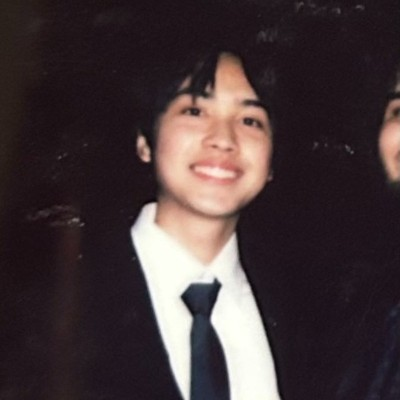

Electrical Engineering + VCD · Notre Dame · 2026
Nguyen Nguyen

Electrical engineering and visual-communication design student at Notre Dame, graduating May 2026. I research ultra-low-power integrated circuit design and hardware verification — building verification infrastructure for adiabatic processors, and exploring domain-specific accelerators for ML. Incoming Ph.D ECE student at the University of Michigan.